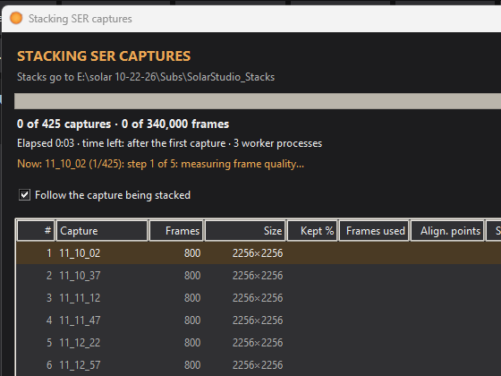
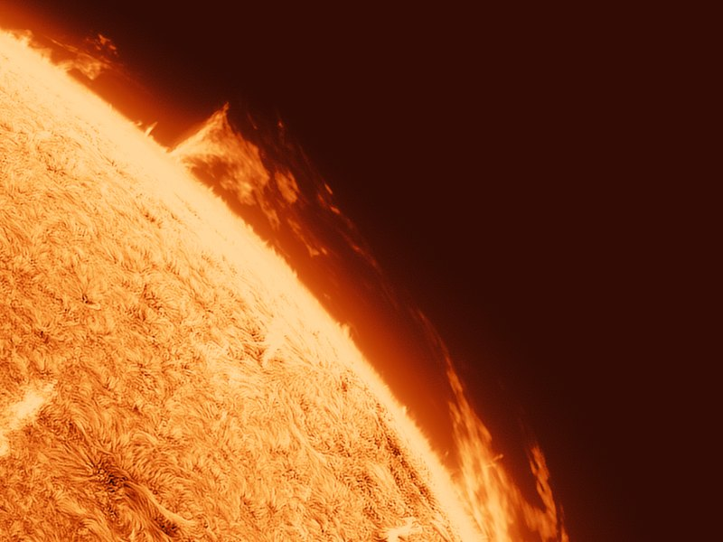
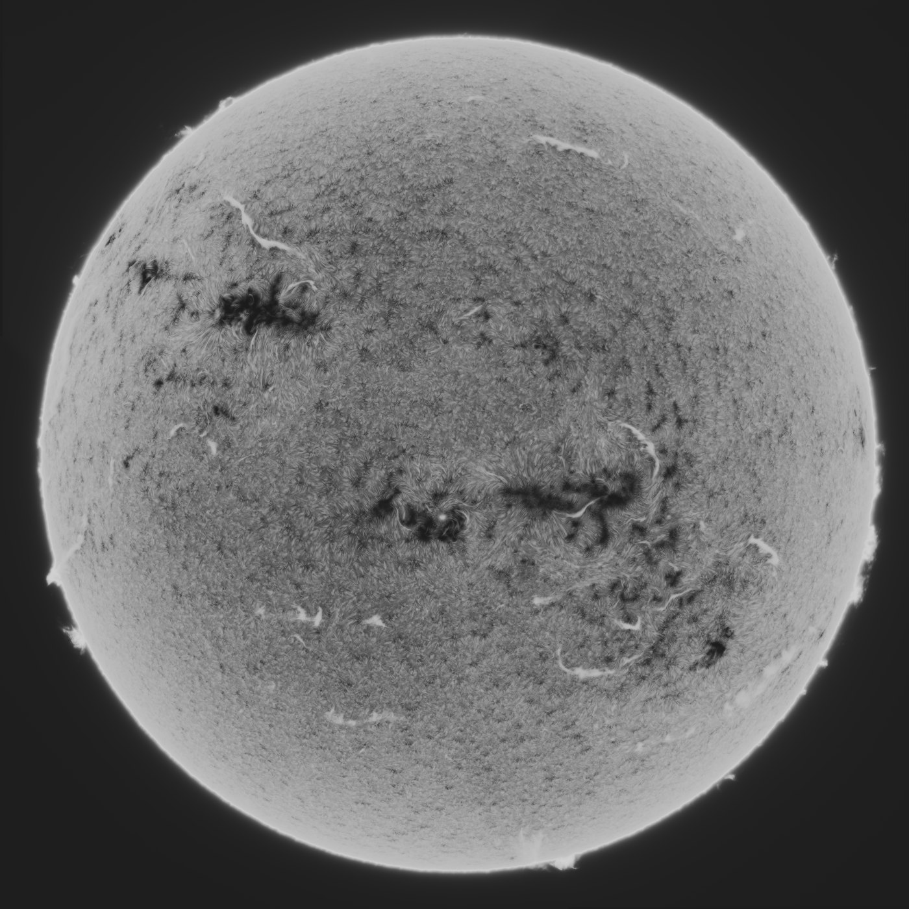

A stacker of its own
Stacks mono SER videos with drizzle and darks, flats and bias, and keeps each stack steady against the next, which matters for a timelapse.
S.U.N. Studio stacks your SER videos, scores and aligns the frames, grades them with curves made for the Sun, and exports a steady timelapse. It handles the prominences, the limb and the disk together.
135 MB · Windows 10 or 11, 64-bit · nothing else to install

Stack a folder of SER videos, or start from stacked TIFFs you already have.
Soft and cloudy frames are found, a reference is picked, and every frame is aligned to it.
Sharpening, a solar tone curve, the prominences and a colour palette, all previewed live.
MP4, GIF or 16-bit TIFF frames, or a single still.
Every step knows where the disk, the limb and the sky are, so a stretch that brings up a faint prominence doesn't burn out the surface beside it.

Stacks mono SER videos with drizzle and darks, flats and bias, and keeps each stack steady against the next, which matters for a timelapse.

Measures the sky, the prominences and the disk, and writes a solar tone curve for them in one press, positive or inverted.

Brings up faint prominences without lifting the disk, with a chromosphere rim, halo cleanup and an off-limb curve of their own.

Joins overlapping panels into one full disk, evens out their brightness and skies, and hides the seams.

Turns your frames so north is up, then labels the active regions, draws a heliographic grid and measures heights and speeds.

Finds birds, aircraft and the ISS crossing the Sun in your captures, with a clip, a composite and the frames.
Every frame is aligned to the reference and the seeing's shimmer is taken out, so the surface holds still and the prominences move as they really did.
Auto stretch writes a curve made for solar images. Positive gives a black sky and bright prominences with a thin rim at the limb. Inverted gives the classic dark-on-light look, with the prominences still bright.
 PositiveInverted
PositiveInverted

Free. Unzip it to a folder and run S.U.N. Studio.exe. Python and every library are inside.
Checksums and later versions: all releases
The first time you run it, Windows may say "Windows protected your PC". That's because the program is new and unsigned. Click More info, then Run anyway.